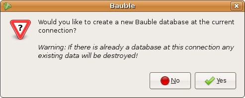

When you start Bauble the first thing that comes up is the connection dialog.
From this dialog you can select the different connection parameters.
If this is the first time that you are starting Bauble then you will not having any connections to choose from. Click on the add button to create a new connection.
By default Bauble uses the file-based SQLite database. If you use the default filename then Bauble creates a database file with the same name as the connection in ~/.bauble on Linux or Application Data\Bauble on Windows.
Bauble allows you to connect to any existing database. If you connect to an empty database a message will popup asking asking you if you would like to create a new database.
To create a new database you have to first connect to a database. See Connecting to a database.
If you are connecting using the default SQLite database backend then Bauble can handler everything that needs to be done to create a new database.
If you are connecting to a server based database like PostgreSQL will have to manually create the database and permissions for the database while Bauble will create the tables and import the default data set. Creating a database on aserver based database is beyond the scope of this manual. If you just got the chills or sick at your stomach I recommend you just stick with SQLite.
If you have connected to a database that has not yet been initialized by Bauble then you will get the following dialog:
Be careful because if you have entered the wrong connection parameters it is possible to overwrite an existing database at this connection.
If you are sure you want to create a database at this connection then select “Yes”. Bauble will then start creating the database tables and importing the default data. This can take a minute or two so while all of the default data is imported into the database so be patient.
XXX. TODO: Once the default database has been created then you are ready to start inserting or searching...